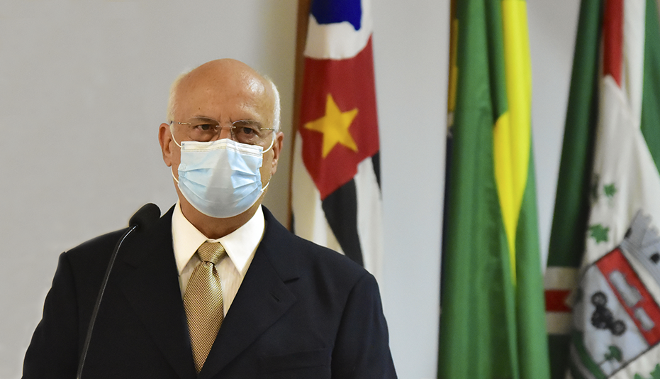

Campo Limpo Paulista é um município brasileiro do estado de São Paulo.sua população foi estimada em 84 650 habitantes, conforme dados do IBGE de 2019. Integra a Região Metropolitana de Jundiaí e é formado pela distrito sede e o distrito de Botujuru.
O unico ponto turistico oficial da cidade é o cristo
Veja mais!Atualmente prefeito da cidade é o Luiz Antonio Braz é médico, empresário, casado, 62 anos. Eleito pela terceira vez para conduzir o município de Campo Limpo Paulista (1997, 2001 e 2021) terá a chance de resgatar grandes programas que fizeram parte da nossa história recente e mudaram a vida de muitas pessoas, como a Estação Juventude.
